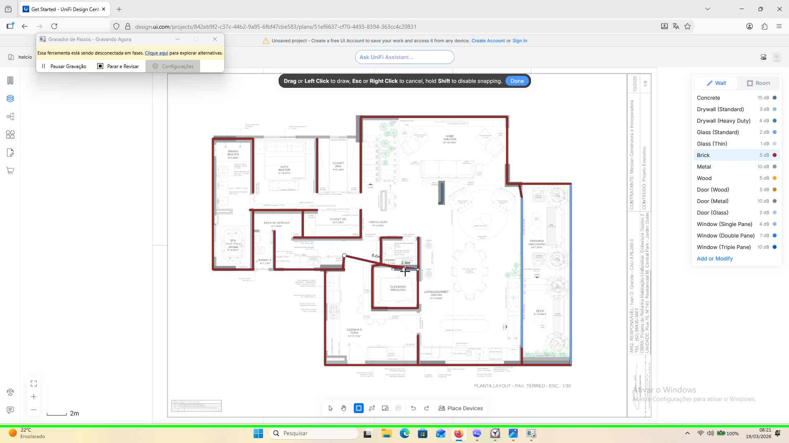

Anterior Avançar
Etapa 11: Entrada de teclado do usuário em "Get Started - UniFi Design Center — Perfil original — Mozilla Firefox (janela)" em "Get Started - UniFi Design Center — Perfil original — Mozilla Firefox" [Esc]
